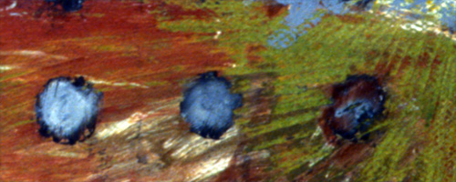

|
DM 2005 |
|
|
|
|
|
|  |
- The format for lectures was excellent. Not only was progression logical and sequential, but the lecturers were all excellent. An interdisciplinary viewpoint was achieved, in my opinion, and was most beneficial.
- Maybe it is because this is a new type of class, the lecturers were very enthusiastic, and I've even enrolled in some of their courses next semester.
- I had never been exposed to many of the fields explored this semester, and each speaker did a wonderful job of conveying his or her subject area in a very useful and meaningful fashion from which I have a taken a great deal.
- This course has really made me more aware of the matter around me, and my interaction with the world. It's also gotten me thinking a lot about ethical and political issues. This course has really opened my eyes to interesting topics and professors, which I never would have considered further exploring.
- I thought that the science/ethics dialectic that continually came up - and was clearly a part of the original design of the class - was the most intriguing and helpful. It's not often that you have the opportunity to be immersed with an expert in a particular body of knowledge, and to simultaneously explore its moral/philosophical implications.
- I have learned a great deal about the myriad fields explored in this course and have gained enough insight into them to understand how these different levels of matter fit and function in the world we live in. Further, many aspects of these fields which I had previously been completely unaware of were brought to my attention.
Discussion sections were great
- The dialogue amongst people of different disciplines was the most rewarding part of the semester.
- I really think our discussion was great because we had diverse opinions and it was a small group so we really got discussion going among us, which I think made us closer.
- The discussions were good because of the interdisciplinary nature of the students, and because there were several views represented, we could have a more thorough and multifaceted discussion of the topic.
- I liked having discussions a lot because it gives people an opportunity to flesh out and debate ideas related to what we've learned and isn't the whole idea behind this class making practical use of our knowledge anyway?
- I also really liked the discussion section format - the fact that sections were really small – a classmate and I were talking about it and we both said that we actually enjoyed the discussion for this class as opposed to most where you dread going to section. I really felt comfortable talking in section and it was a great opportunity to hear the thoughts of my classmates who had some really brilliant things to say.
- My discussion section and I commented several times during the year how much fun we were having with each other, and our discussion section was one I was happy to leave 10 minutes late every week.
Humanities-friendly way to earn science credit
- My greatest accomplishment is just being able to finish a science course. I have always been afraid of the sciences and to finally take a course dealing with a variety of sciences has been very rewarding for me, because I enjoyed the experience.
- I have always been very 'afraid' of the natural sciences courses, but this one has been something very different. I have enjoying every single lecture that gave me the opportunity to look at all the sciences with a different perspective. This course was amazing because it made me appreciate natural sciences and the way that the course was designed was a good way in introducing the natural sciences to non natural science students. …Dividing each lecture in two categories, looking at the point also from the ethical viewpoint is what I appreciated the most in this class. This gave me the opportunity to view the subject in two different ways rather than one, which was not going to fully complete my learning.
- "Rekindling my love for the sciences" was also part of my course goals. Though I know that I want to stay in the humanities, I think that, at some level, I DO enjoy science! Thank you, Designing Matter!!!!
- Designing Matter was a very enjoyable course to take, and I am glad I had the opportunity to do so. I think it should be emphasized somehow that this course is especially valuable for first-years who are undecided in their major/s; for me, it was a great way to finish up the Natural Sciences/Mathematics CLAS requirement!
- I feel like I began the class reluctant to speak up in section, because I didn’t feel that as a non-scientist I had anything interesting or informed to say about “lasers.” Gradually, though, I learned to think differently. I feel that I actually contributed a great deal to section discussions. I did so by virtue of my unique perspective on science, as a now-informed outsider. I felt like an anthropologist studying another culture (science) I was able to see what the natives couldn’t.
- I was not really following scientific trends and innovations before I took this course. Now I am interesting in all kinds of things. I want to know what is going to happen with nano, and stem cells and I am even excited about the development of the A-school.
Breaking down the science/humanities barrier
- It was most challenging to engage in conversations with real scientists, bc sometimes I felt like we were speaking different languages. Once instance was amazing, though - after the astronomy lecture, 1 other "science" guy in discussion and I BOTH raised the relationship btwn the astronomy lecture and the contemporary art lecture- it was refreshing and surprising for me to be critically thinking in the same ways as a scientist! This little event really helped me to bridge some disciplinary misunderstandings! (Humanities student)
- What I found most interesting is the interplay between apparently separate disciplines that are involved in the design of matter. This class certainly broke down many of those traditional disciplinary barriers and even some of my own prejudices. It is remarkable to see what level of interconnectedness exists between apparently separate disciplines like science, art, public policy, and ethics. Each of these sectors not only thinks and progresses in ways very similar to the others, but also depends on the others to provide a foundation for its work. For example, science, as we saw, provides a decision calculus for public policy, and public policy decisions dictate the course of science. Studying this interplay was particularly intriguing. (Science student)
- I now better understand the "interconnectedness" that exists both within scientific fields and within all areas of study from sciences to humanities. This was probably the most thought provoking aspect of the course, as it was something I had never considered before.
Project and proposal assignment were very rewarding
- This is my first attempt at research, and I found it an extremely enlightening experience. Learning about a subject that I have not previously explored in great detail has added to my knowledge and understanding of the ways in which certain things work.
- Completing the proposal was my greatest accomplishment. I never knew I had it in me to design a totally new project and try to argue for it.
- I was surprised to accomplish all my goals and more for the proposal. I was given a great opportunity to push myself and I really learned a lot. I feel that my proposal looked toward the broader picture of giving back to the community, which was my primary goal and I was excited to make all the contacts I did…I also felt really good about the response I got from people both in and out of the UVA community. People really liked my idea and it sparked conversation rather than a courtesy “that’s nice” when you tell someone about your workload.
- The Proposal was definitely the most challenging, but also the most rewarding. This was the first type of proposal I have ever written, and will like to accomplish perhaps another… Again, the proposal was the most rewarding aspect for myself. After finishing I felt a great sense of accomplishment, mainly because of the unique experience I would not have received if I had not taken Designing Matter. I know that there is room for improvement within my proposal, but that just adds to the overall experience.
- I believe my greatest accomplishment and my most rewarding experience were one and the same - the drafting of a complete project proposal. Until this semester, I was completely inexperienced in that process. And I feel like I came out the other side with a decent first draft of a proposal I would very much like to fine tune - because I think it is a worthy project and one of which I am proud.
- I am very proud to have impressed my instructors with my research proposal idea. The work on the proposal was the most rewarding part of the course, partly because there was so much freedom and support for creativity.
- I think the proposal was the most significant and important of the assignments, and its value is in the proposal methodology we learned (major ideas are applicable in both academic and business situations-- deliverables, project summaries, feasibility analysis).
- Proposal, getting it done was awesome, loved doing it, loved finishing it. Greatest accomplishment this semester for me.
Networking opportunities are abundant
- I feel like I have established some relationships, and even if I haven't, at least I know how to go about finding people and connecting with people. Everybody knows somebody who could possibly be of help.
- Before taking this class, I had come to know a relatively small group (my major) very well. CCSC200 introduced me to a larger group that I probably never would have come in contact with otherwise. Now, I feel completely comfortable hailing them from across the street, or even sitting down and having a conversation.
- I have met friends and established relations with teachers, TAs, and other faculty during my research and work. This network of people will hopefully play a role in future projects or assignments of mine.
- I have absolutely established great relationships and valuable ties with many different people during this class and research.
|
|
|